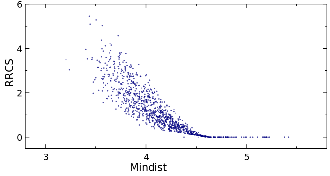

Tutorial 1: Residue Contact Analysis of Lysozyme MD Analysis

This comprehensive tutorial demonstrates residue-residue contact analysis using GMX_RRCS with lysozyme MD simulation data. GMX_RRCS is a tool designed for analyzing residue-residue contact scores (RRCS) in molecular dynamics (MD) simulations. This tutorial will guide you through the entire process, from setting up the simulation data to computing and visualizing RRCS results. By following this guide step by step, you will learn how to efficiently use GMX_RRCS to analyze protein interactions.
Table of ContentsPrerequisites
Before starting, ensure you have the following installed:
- GROMACS for molecular dynamics simulation.
- GMX_RRCS installed on your system.
- Python (3.7 or later) with necessary dependencies such as NumPy and Matplotlib.
# Install required dependencies
pip install gmx_rrcs numpy matplotlib MDAnalysisStep 1: Preparing the Simulation Data
This step is optional and requires you to process the trajectory using GROMACS. However, we strongly recommend thoroughly processing the trajectory before computing RRCS, as this significantly impacts the program's performance and efficiency. This tutorial uses a classic GROMACS lysozyme MD case to demonstrate RRCS analysis.
After running the simulation, you will obtain an XTC file containing trajectory data. To extract a protein-only trajectory with a time step of 0.1 ns over 300 ns, run:
echo 2 2 2 | gmx trjconv \
-f md_0_1.xtc \ # Input trajectory
-s md_0_1.tpr \ # Topology file
-fit rot+trans \ # Rotational/translational fitting
-center \ # Center protein
-dt 100 \ # 100ps interval (0.1ns)
-b 200000 \ # Start at 200ns
-e 300000 \ # End at 300ns
-o md_0_1_processed.xtc # Output fileThe command
echo 2 2 2 is used to pass interactive options to gmx trjconv, eliminating the need for manual input.
- The first 2 selects the atom group for least squares fitting, which in this case includes all non-hydrogen atoms of the protein.
- The second 2 specifies the atom group for centering, also choosing all non-hydrogen atoms of the protein to ensure that the trajectory remains centered around this molecule.
- The third 2 determines the output atom group, meaning the trajectory file will contain only the selected non-hydrogen atoms of the protein.
-
The processed trajectory file
md_0_1_processed.xtchas been optimized, reducing its size significantly from 12GB to 12MB. - You can click here to download the processed trajectory file.
After processing the trajectory, we need to generate a topology file (md_0_1_processed_dump0.gro) that exactly matches the processed trajectory (md_0_1_processed.xtc), ensuring consistency in atom numbers and other key information. Run the following commands:
echo 2 | gmx convert-tpr \
-s md_0_1.tpr \
-o md_0_1_processed.tpr # Output a new TPR file that matche the processed trajectory.
echo 2 | gmx trjconv \
-f md_0_1_processed.xtc \
-s md_0_1_processed.tpr \
-o md_0_1_processed_dump0.gro \ # Output the GRO format coordinate file.
-dump 0 # Extracts structure information at 0 ps.
-
The first command
gmx convert-tprcreates a new TPR file (md_0_1_processed.tpr) that matches the processed trajectory, ensuring consistency during analysis. -
The second command
gmx trjconvextracts the coordinates at 0 ps from the trajectory, generating a GRO format structure file (md_0_1_processed_dump0.gro), which can later be converted to PDB for visualization and further analysis. - Click here to download the processed topology file.
At this point, we have successfully completed the trajectory preprocessing. The next step is to proceed with GMX_RRCS analysis.
Before moving forward, here's a useful tip: During the preprocessing stage, you can extract only the atomic groups required for the RRCS calculation to optimize efficiency. For example, if you only need to compute RRCS for two specific residues between 100 ns and 200 ns, you can extract only those residues within this time range during preprocessing. This approach significantly reduces the trajectory file size and greatly accelerates the computation process, making the analysis much more efficient.
Step 2: Using the Command Line Interface computing RRCS
After preprocessing the trajectory, we can now compute Residue-Residue Contact Strength (RRCS) using GMX_RRCS. We assume that GMX_RRCS has already been installed, and you can execute the following command to perform the calculation:
gmx_RRCS \
--top_file md_0_1_processed_dump0.gro \ # PDB topology
--traj_file md_0_1_processed.xtc \ # Preprocessed trajectory file
--res_file tutorial_1_residue_pair.txt \ # File specifying the residue pairs for RRCS calculation
--output_dir . \ # Output directory
--output_file tutorial_1_rrcs_result.txt \ # Output file(s)
--num_processes 100 # Number of processes for parallel computation
--filter_threshold 0.0 # Export results above 0.0 to a specified file-
Specifying the residue pair file:
You must specify a file containing the residue pairs for RRCS calculation using the
--res_fileparameter. For formatting rules, to this guide. The file used in this example,tutorial_1_residue_pair.txt, can be downloaded here. -
Output file format:
The calculated RRCS values will be saved in tutorial_1_rrcs_result.txt, with a format similar to the following:
Frame Residue1 Residue2 RRCS 1 SYSTEM:121GLN SYSTEM:119ASP 0.25705056871686655 1 SYSTEM:121GLN SYSTEM:124ILE 1.6024710655212397 1 SYSTEM:121GLN SYSTEM:125ARG 1.1029357705797465 1 SYSTEM:121GLN SYSTEM:24SER 1.9814428533826551 1 SYSTEM:121GLN SYSTEM:25LEU 5.636771638052803 1 SYSTEM:121GLN SYSTEM:26GLY 3.5703242233821317 1 SYSTEM:124ILE SYSTEM:121GLN 1.6024710655212397 1 SYSTEM:124ILE SYSTEM:129LEU 1.8078749656677244 ...You can download the output file
tutorial_1_rrcs_result.txt, and the filter result (tutorial_1_rrcs_result_filter_rrcs_greater_than_0.0.txt). -
Understanding the “SYSTEM” tag:
In the output file, the
SYSTEMtag appears in place of chain identifiers. If the original trajectory and topology files do not contain explicit chain information, GMX_RRCS will default to labeling all residues as belonging to the first chain, denoted asSYSTEM.
Step 3: Visualizing RRCS Data
After completing the RRCS calculation, we will now demonstrate some example analyses. Please note that these are just a few possible use cases of RRCS, and you can tailor the analysis to your specific research objectives.
Example 1: Temporal Evolution of RRCS Between Two Residues
In this example, we analyze how the RRCS between Residue PHE34 and Residue ARG114 changes over time. A line plot is generated to visualize the interaction dynamics between these two residues throughout the simulation. You can generate the RRCS plot using the following command:
plot_rrcs_line tutorial_1_rrcs_result.txt tutorial_1_rrcs_result.png SYSTEM:34PHE-SYSTEM:114ARG -w 15-
plot_rrcs_lineis a built-in plotting tool ingmx_RRCS, which is automatically installed withgmx_RRCS. If the default tool does not meet your needs, you can click here to access the Python source code for further customization. -
You can run plot_rrcs_line -h to check all available parameters. Notably,
SYSTEM:34PHE-SYSTEM:114ARGspecifies the residue pair to be analyzed, and you must ensure that tutorial_1_rrcs_result.txt contains data for this residue pair; otherwise, the plot cannot be generated correctly.
After executing the command, you will obtain a line plot that depicts the temporal evolution of RRCS (Example output file: tutorial_1_rrcs_result.png).
- X-axis: Represents the frames of the simulation trajectory, indicating different time points in the simulation.
- Y-axis: Represents RRCS (Relative Residue Contact Strength), which quantifies the strength of interaction between the specified residue pair over time.
This plot allows you to observe how the interaction between Residue PHE34 and Residue ARG114 changes over time. You may identify trends such as increasing or decreasing interaction strength and detect stable interaction patterns within the simulation.
Example 2: Correlation between Mindist and RRCS
In this example, we analyze the correlation between Minimum Distance (Mindist) and Relative Residue Contact Strength (RRCS).
First, we create an index file that includes Residues PHE34 and ARG114. After executing the following command, enter 2 & r 25 and
gmx make_ndx -f md_0_1_processed.tpr -o md_0_1_processed.ndxNext, we use the gmx mindist command to compute the minimum distance between LEU25 and ILE124:
echo 10 11 | gmx mindist -f md_0_1_processed.xtc -s md_0_1_processed.tpr -n md_0_1_processed.ndx -od md_0_1_processed_mindist.xvgNext, We plot Mindist (X-axis) against RRCS (Y-axis) to visualize their relationship. It is important to highlight the fundamental methodological differences between RRCS and minimum distance (Mindist):
- Minimum Distance (Mindist) considers only the shortest interatomic separation between two residues, making it a single-point measurement.
- RRCS, on the other hand, integrates contributions from all heavy atoms within a defined cutoff range, providing a cumulative measure of contact strength.
Due to this methodological distinction, RRCS captures richer multi-atom interaction information, including transient yet significant dynamic contacts, which the minimum distance metric inherently overlooks, especially in cases involving tight, fluctuating interactions.
Example 3: Generating a Bar Chart of the Total RRCS for Specific Residues
In this example, we generate a bar chart displaying the total RRCS of specific residues with all other residues, providing an intuitive visualization of their interaction strength with the surrounding environment. Run the following command:
gmx_rrcs_count -i tutorial_1_rrcs_result.txt -o tutorial_1_rrcs_bar.png -r '26,33,34,121,124'-
gmx_rrcs_countis a sub-tool of gmx_RRCS, which is installed automatically withgmx_RRCS. If the default tool does not meet your needs, you can click here to access the Python source code for further customization. -
You can check the details of each parameter by running
gmx_rrcs_count -h.
Additional Resources
- Official Documentation: GitHub Repository
- Simulation Tutorial: GROMACS Lysozyme Tutorial
- Visualization Tools:
Contact zhouqt@fudan.edu.cn for assistance